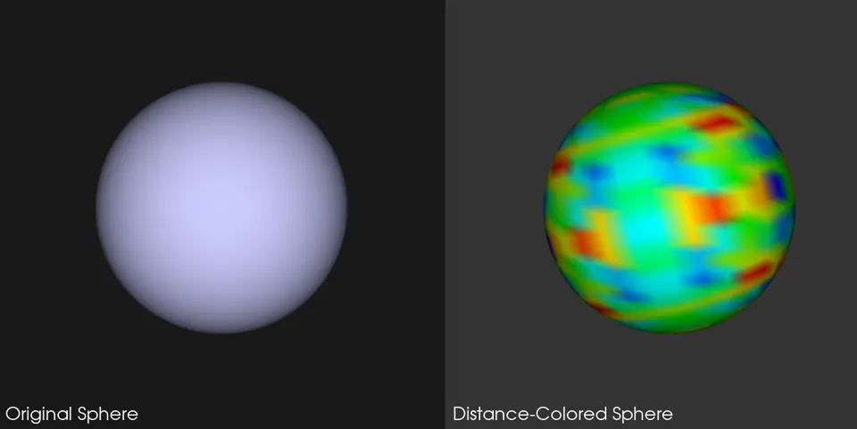

Creating custom filters and algorithms opens up a world of possibilities for tailored data processing and visualization. By extending VTK's capabilities, specialized techniques can be introduced that meet the unique needs of scientific research, engineering, medical imaging, or data analysis.
The reason custom filters matter is that real projects rarely fit perfectly inside “stock” tooling. Built-in filters cover the common cases, but the moment a workflow needs a domain-specific metric, a bespoke feature extractor, or a new way to manipulate geometry, a custom filter turns that requirement into a reusable pipeline block instead of a one-off script.
Do treat custom filters as reusable building blocks that can live alongside VTK’s built-ins. Don’t keep important computations outside the pipeline in ad-hoc loops that are hard to reuse, debug, or chain.
VTK comes with a broad range of built-in filters and classes that cover many common visualization tasks, but there may be occasions when you need more specific functionality. For instance, you might need to process data from specialized scientific instruments, create a custom metric for point analysis, or experiment with novel geometry-manipulation algorithms. In these cases, developing a custom filter allows you to:
What makes this approach powerful is that once an algorithm is wrapped as a filter, it inherits the same “plug-and-play” behavior as the rest of VTK: it can be connected, updated, cached, and combined with other filters in predictable ways. That predictability is what keeps complex visualization systems maintainable.
Below, we’ll walk through the fundamentals of how VTK processes data, the steps for building a custom filter, and a detailed example that demonstrates how you might carry out a distance-to-point calculation for polygonal data.
The VTK pipeline is the backbone of VTK’s data processing and visualization workflow. It’s designed around a demand-driven architecture, meaning that data flows through the pipeline when something downstream (like a renderer) requests it. The pipeline consists of sources, filters, and mappers, connected in a sequence where each filter takes data from its predecessor, processes it, and passes it on to the next stage.
The “why” behind this design is simple: pipelines make large workflows scalable. Each step does one job, and everything downstream benefits from that one job being done consistently. It also means custom filters should behave like good citizens: read inputs, write outputs, and only compute when asked.
Do keep each pipeline stage focused on a single responsibility. Don’t mix rendering/UI logic into a data-processing filter.
Here’s a simple ASCII diagram illustrating the VTK pipeline:
[Source] -> [Filter 1] -> [Filter 2] -> ... -> [Mapper] -> [Actor] -> [Renderer]A quick way to read those bullets in context is: a source creates data, filters change or enrich data, a mapper prepares it for drawing, an actor holds appearance and placement, and a renderer draws the scene. When a custom filter is inserted, it becomes “Filter N” in that chain and should feel no different from any built-in filter.
When you create a custom filter, you add a new link in this pipeline. Your filter can accept data from upstream VTK filters or sources, perform specialized calculations, and pass new or modified data downstream. By following VTK’s design patterns, your custom filter remains interoperable with any other VTK component, preserving the modular, pipeline-oriented architecture that makes VTK powerful and flexible.
Building a custom filter in VTK is a multi-step process that ensures your new filter integrates seamlessly with the existing framework. Below is an outline of the typical steps you’ll follow:
These steps exist so a custom filter doesn’t just “work once,” but continues working as workflows grow: more data, more filters, more outputs, more parameters. Following the conventions is what unlocks interoperability.
Do follow VTK conventions even in small prototypes—prototypes tend to become production.
Don’t skip setters/getters and Modified() calls; stale pipelines are a common source of confusion.
I. Identify Your Data and Goals
Determine the type of data you want to process and the computations or transformations you intend to apply. For example, are you dealing with polygonal data (vtkPolyData), image data (vtkImageData), or unstructured grids (vtkUnstructuredGrid)? Identifying this will help you choose the appropriate base class.
II. Choose an Appropriate Base Class
VTK provides several base classes for filters, each tailored for different data types. The most commonly used base classes are:
| Base Class | Purpose & Description |
|---|---|
vtkAlgorithm |
A general-purpose class capable of handling multiple inputs and outputs of various data types. |
vtkPolyDataAlgorithm |
Specialized for polygonal data, such as meshes or surfaces, making it ideal for 3D models. |
vtkImageDataAlgorithm |
Specialized for image-based data, commonly used in medical imaging or 2D/3D grid-based data operations. |
vtkPolyDataAlgorithm is usually the go-to choice.vtkImageDataAlgorithm provides convenient methods for working with pixel/voxel grids.vtkAlgorithm is the most general and flexible if you have an unusual data structure or want to support multiple data types.Choosing the right base class is mostly about correctness and convenience. It reduces boilerplate and ensures that input/output expectations match the dataset type. That makes the filter easier to use and harder to misuse.
Do pick the most specific base class that matches the primary input type.
Don’t default to vtkAlgorithm when the data type is known and stable.
III. Subclass the Chosen Base Class
In languages like C++, you’ll create a header (.h) and implementation (.cxx) file, then subclass the base class. In Python, you can just subclass directly. Your subclass should define any member variables you need (like parameters for your filter) and override the relevant methods.
IV. Carry out Core Methods
Every custom filter has a few important methods you need to carry out (or override), with the most important typically being:
Properly managing input and output ports is necessary. You need to specify how many inputs your filter expects (SetNumberOfInputPorts) and how many outputs it will provide (SetNumberOfOutputPorts) if you deviate from the defaults.
The important idea is that computation belongs in the execution phase (RequestData()), not sprinkled throughout initialization or setters. That keeps results consistent and makes sure pipeline updates happen at the right time.
Do compute in RequestData() and treat setters as configuration only.
Don’t hide heavy computation inside setters or constructors.
V. Expose Parameters and Methods
If your filter has parameters (e.g., a threshold value, a coordinate, or a scaling factor), create setter and getter methods so users can configure your filter. Keep them in sync with the VTK naming conventions (e.g., SetX, GetX, etc.) if possible.
VI. Compile and Use
Let’s say you have a 3D model (e.g., a sphere, a mesh from a CT scan, or a CAD object), and you need to calculate how far each vertex on the model is from a specific point in 3D space. This is a common operation in fields like:
This example is a good “starter” custom filter because it demonstrates the classic VTK pattern: compute something per point, store it as a VTK array, then let the rest of VTK use it (coloring, thresholding, contours, statistics). That’s the core loop of many real filters.
Do store derived results as VTK arrays (point data or cell data) so they are usable downstream. Don’t keep computed results only in Python lists if they are meant for visualization or pipeline processing.
When the distance for each point is computed, it’s often stored in a scalar array so it can be used for:
Below is an example demonstrating how to carry out this custom distance filter for polygonal data. We’ll subclass vtkPolyDataAlgorithm and override the RequestData() method, where we do all our distance computations.
import math
import vtk
class DistanceToPointFilter(vtk.vtkPolyDataAlgorithm):
"""
A custom filter that computes the Euclidean distance of each point in a vtkPolyData
to a specified target point in 3D space. The distances are stored as a scalar array.
Usage:
distance_filter = DistanceToPointFilter()
distance_filter.SetInputConnection(somePolyDataSource.GetOutputPort())
distance_filter.SetTargetPoint(1.0, 2.0, 3.0)
distance_filter.Update()
outputPolyData = distance_filter.GetOutput()
"""
def __init__(self):
super().__init__()
# Initialize the target point. Users can modify this via SetTargetPoint().
self.TargetPoint = [0.0, 0.0, 0.0]
# Optional: explicitly set ports (often handled automatically in Python, but clear and safe)
self.SetNumberOfInputPorts(1)
self.SetNumberOfOutputPorts(1)
def SetTargetPoint(self, x, y, z):
"""
Sets the 3D coordinates of the target point from which distances will be calculated.
"""
self.TargetPoint = [float(x), float(y), float(z)]
# Mark the pipeline as modified so changes propagate
self.Modified()
def GetTargetPoint(self):
"""
Returns the current target point as a tuple (x, y, z).
"""
return tuple(self.TargetPoint)
def RequestData(self, request, inInfo, outInfo):
"""
The main execution method where the filter processes input vtkPolyData
and produces an output with a scalar distance array.
"""
# 1. Retrieve the input and output data objects from the pipeline.
input_data = vtk.vtkPolyData.GetData(inInfo[0], 0)
output_data = vtk.vtkPolyData.GetData(outInfo, 0)
if input_data is None or output_data is None:
return 0
# 2. Copy the input to the output.
output_data.ShallowCopy(input_data)
# 3. Get the number of points in the polygonal data.
num_points = input_data.GetNumberOfPoints()
# 4. Create a new vtkFloatArray to store the distance values for each point.
distances = vtk.vtkFloatArray()
distances.SetName("DistanceToTarget")
distances.SetNumberOfComponents(1)
distances.SetNumberOfTuples(num_points)
# 5. Compute distances for each point and store them in the array.
tx, ty, tz = self.TargetPoint
for i in range(num_points):
px, py, pz = input_data.GetPoint(i)
dx = px - tx
dy = py - ty
dz = pz - tz
distance = math.sqrt(dx * dx + dy * dy + dz * dz)
distances.SetValue(i, distance)
# 6. Attach the array to the output's point data. Also set it as the active scalar.
output_data.GetPointData().AddArray(distances)
output_data.GetPointData().SetScalars(distances)
return 1
# Optionally, you could override RequestInformation() if you need
# to specify extents or other meta-information.This implementation focuses on being pipeline-friendly: it reads from the pipeline, writes back into the output object, and stores results in point data. That keeps the output immediately usable by mappers and by any other filters that operate on scalar fields.
Do use ShallowCopy when adding arrays to an existing dataset without changing geometry.
Don’t use DeepCopy unless independent geometry/connectivity duplication is actually required.
Here’s a breakdown of what’s happening in RequestData():
GetData step, the input_data and output_data are fetched from the pipeline.ShallowCopy operation preserves geometry, connectivity, and attributes by copying the input to the output.ShallowCopy shares underlying data and is suitable unless a fully independent copy is required.DeepCopy creates a fully independent copy but is not needed if only new arrays are added.This custom VTK filter calculates the Euclidean distance from each point in a vtkPolyData to a specified target point. Below is an example demonstrating how to use it with a sphere visualization.
The key is to connect the filter into the pipeline so it behaves like any other VTK algorithm: source → filter → mapper. That ensures updates happen correctly and makes it easy to insert additional filters later.
Do connect with SetInputConnection(...) when working with sources/filters.
Don’t rely on non-pipeline shortcuts when the goal is a reusable workflow.
Creating and configuring the distance filter
import vtk
# Create a sphere source for demonstration
sphere = vtk.vtkSphereSource()
sphere.SetRadius(1.0)
sphere.SetThetaResolution(30)
sphere.SetPhiResolution(30)
# Create and configure the distance filter
distance_filter = DistanceToPointFilter()
distance_filter.SetInputConnection(sphere.GetOutputPort())
distance_filter.SetTargetPoint(2.0, 0.0, 0.0) # Target point outside the sphere
distance_filter.Update()
output_data = distance_filter.GetOutput()Setting up the visualization pipeline with color mapping
# Create mapper and configure scalar visualization
mapper = vtk.vtkPolyDataMapper()
mapper.SetInputData(output_data)
# Set up color mapping
scalar_range = output_data.GetPointData().GetScalars().GetRange()
lut = vtk.vtkLookupTable()
lut.SetHueRange(0.667, 0.0) # Blue to red color range
lut.SetTableRange(scalar_range)
lut.Build()
mapper.SetLookupTable(lut)
mapper.SetScalarRange(scalar_range)
# Create actor and set up visualization
actor = vtk.vtkActor()
actor.SetMapper(mapper)The output will look similar to the following:
